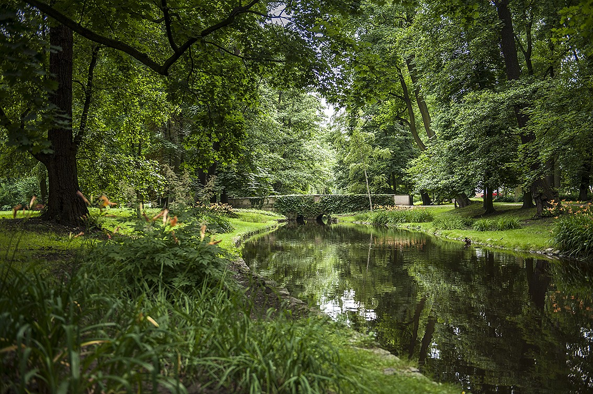

Park Miejski
5 faktów o Parku Miejski w Kaliszu:
- Park założony został już w 1798 r.
- W XIX wieku uważany był za najpiękniejszy polski ogród publiczny.
- Pod koniec XIX w. w parku ustawiono sześć rzeźb, z których po II wojnie światowej zachowała się tylko „Flora”.
- Jest najstarszym parkiem miejskim w Polsce.
- 24,28 ha - to powierzchnia Parku Miejskiego.